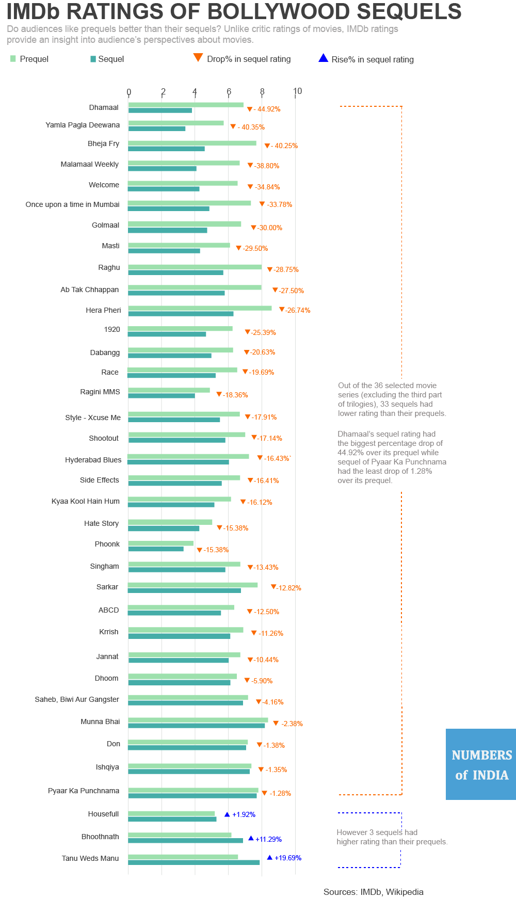

{% include "og_static.html" %} {% include "ga.html" %} {% include "imports_static.html" %} {% include "fb.html" %}
{% include "navbar.html" %}

There has been a fad of sequels in Bollywood of late. But does the audience love the sequels as much as the prequels?
{% include "sharing.html" %} {% include "footer.html" %}